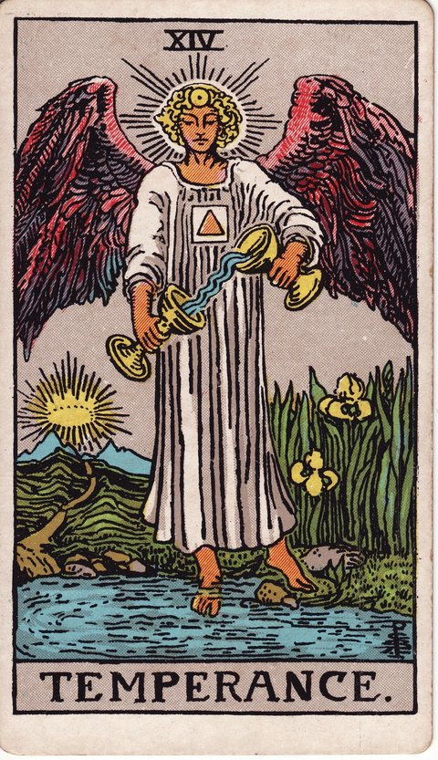

메이저 아르카나 · 타로 카드 백과사전
절제 (Temperance)

정방향
키워드: 섬세한 균형 · 조화로운 조율 · 인내하는 성장 · 차분한 절도 · 완급의 미학 · 무르익는 조화
조언: 서두르지 않고 상반된 것들 사이에서 알맞은 균형을 찾아보세요.
연애운
솔로
서두르지 않고 천천히 알아가는 만남이 좋은 결실을 맺는 시기입니다. 급하게 다음 단계로 넘어가려 하지 말고 서로를 알아가는 과정 자체를 즐겨보세요.
커플
연인 사이에 서로를 배려하며 조화를 이루어가는 안정적인 시기입니다. 한쪽만 맞추지 않도록 원하는 것을 솔직하게 주고받아보세요.
재물운
소비
무리하지 않고 알맞게 조율하는 소비가 좋은 결과를 만드는 시기입니다. 고정 지출과 유동 지출의 비율을 한번 점검해보면 도움이 됩니다.
투자
서두르지 않고 여러 요소를 균형 있게 살피는 투자가 안정적인 시기입니다. 하나의 자산에 몰아넣기보다 분산해서 위험을 낮춰보세요.
취업운
구직
여러 조건을 균형 있게 따지며 신중하게 선택하기 좋은 시기입니다. 연봉만이 아니라 근무 환경과 성장 가능성까지 함께 견주어보세요.
이직
여러 역할 사이에서 균형을 잘 잡아가는 시기입니다. 욕심내어 한꺼번에 다 잘하려 하지 말고 우선순위를 먼저 정해보세요.
직장운
팀워크
여러 의견을 균형 있게 조율하며 팀에 안정감을 주는 시기입니다. 소수 의견도 놓치지 않고 짚어주면 팀의 신뢰가 더 단단해집니다.
개인성과
무리하지 않고 알맞은 속도로 업무를 조율해가는 시기입니다. 우선순위가 낮은 업무는 과감히 뒤로 미뤄도 괜찮습니다.
사업운
창업준비
무리하지 않고 알맞은 속도로 사업을 키워가는 시기입니다. 매출 목표를 조금 낮추더라도 지속 가능한 속도를 우선시해보세요.
운영중
여러 자원의 균형을 세심하게 맞추면 사업 운영이 한층 안정되는 시기입니다. 한 부서에 자원이 쏠려 있지 않은지 전체적으로 점검해보세요.
학업운
시험준비
꾸준하고 균형 잡힌 학습 습관이 좋은 결과로 이어지는 시기입니다. 한 과목에 치우치지 말고 취약한 부분에도 고르게 시간을 배분해보세요.
진로고민
여러 가능성을 균형 있게 저울질하며 방향을 찾아가는 시기입니다. 하나를 성급히 포기하기보다 각 선택지의 장단점을 표로 정리해보세요.
건강운
신체
규칙적이고 균형 잡힌 생활이 컨디션을 안정시키는 시기입니다. 식사와 수면 시간을 일정하게 유지하는 것만으로도 큰 도움이 됩니다.
정신
여러 감정 사이에서 조화를 찾으며 마음이 편안해지는 시기입니다. 감정을 억누르기보다 글로 적어보며 정리하는 것도 도움이 됩니다.
대인관계운
새로운 인연
새로운 사람들과는 적당한 거리를 유지하며 천천히 친해지는 것이 좋은 시기입니다. 처음부터 너무 가까워지려 하지 말고 자연스러운 속도를 따라가보세요.
기존 관계
가까운 사람들과 서로 주고받는 것의 균형을 잘 맞춰가는 시기입니다. 한쪽만 베풀거나 받기만 하지 않도록 마음을 살펴보세요.
명예운
균형 잡힌 처신으로 신뢰와 존경을 꾸준히 쌓는 시기입니다. 어느 한쪽 편도 들지 않는 공정한 태도가 평판을 더욱 단단하게 만듭니다.
이사운
신중하고 알맞은 시기에 이동을 조율해가는 시기입니다. 여러 조건을 비교해보고 가장 무리 없는 시점을 골라보세요.
자식운
균형 잡힌 태도로 아이를 대하며 안정감을 주는 시기입니다. 다른 형제자매와 비교하지 않는 것이 아이에게 큰 안정감을 줍니다.
역방향
키워드: 무너진 균형 · 조급한 극단 · 치우친 태도 · 성급한 엇박자 · 쏠린 무게중심 · 제어 못한 감정
조언: 극단으로 치우치지 않도록 스스로를 다잡아보세요.
연애운
솔로
너무 조급하거나 너무 소극적인 태도 사이에서 균형을 잃을 수 있습니다. 상대의 반응을 살피며 다가가는 속도를 조금씩 조절해보세요.
커플
한쪽으로 치우친 관계가 균형을 잃고 흔들릴 수 있는 시기입니다. 한쪽으로 치우치지 않도록 서로 조금씩 양보해보세요.
재물운
소비
과소비나 극단적인 절약이 오히려 문제를 만들 수 있는 시기입니다. 한 달간의 지출 내역을 직접 기록해보면 치우친 부분이 눈에 보일 수 있습니다.
투자
조급한 판단이나 극단적인 투자 방식이 손실로 이어질 수 있습니다. 결정을 하루 미뤄두고 다시 살펴보는 것만으로도 실수를 줄일 수 있습니다.
취업운
구직
조급한 마음에 성급한 결정을 내려 후회할 수 있는 시기입니다. 제안을 받은 즉시 답하기보다 하루 이틀 생각할 시간을 요청해보세요.
이직
일과 삶의 균형이 무너지며 지쳐가고 있을 수 있습니다. 일과 삶의 균형을 다시 점검해볼 필요가 있습니다.
직장운
팀워크
팀 내 균형이 무너지며 한쪽으로 치우친 결정이 문제를 만들 수 있습니다. 결정 전에 소외된 목소리는 없는지 한 번 더 확인해보세요.
개인성과
업무에 치여 개인적인 시간을 챙기지 못해 지쳐가고 있을 수 있습니다. 퇴근 후 짧게라도 온전히 나만을 위한 시간을 확보해보세요.
사업운
창업준비
조급하게 확장하거나 극단적으로 보수적인 태도가 문제를 만들 수 있습니다. 작게 시험해보고 결과를 확인한 뒤 다음 결정을 내려도 늦지 않습니다.
운영중
사업 확장에 무리하게 힘을 쏟거나 지나치게 몸을 사리면 둘 다 부작용을 낳을 수 있는 시기입니다. 지금 내리는 결정이 어느 한쪽으로 쏠려 있지 않은지 동료와 함께 점검해보세요.
학업운
시험준비
벼락치기나 불규칙한 공부 습관이 성과를 떨어뜨릴 수 있는 시기입니다. 하루 학습량을 정해두고 매일 같은 시간에 앉는 습관부터 만들어보세요.
진로고민
조급하게 하나만 밀어붙이다 다른 가능성을 놓칠 수 있습니다. 결정을 잠시 미루고 주변 사람들의 다양한 의견을 들어보세요.
건강운
신체
불규칙한 생활 패턴이 몸의 균형을 무너뜨릴 수 있는 시기입니다. 한 번에 다 바꾸려 하지 말고 수면 시간 하나부터 고정해보세요.
정신
극단적인 감정 기복이 마음을 지치게 할 수 있는 시기입니다. 기분이 크게 흔들릴 때일수록 잠시 멈추고 숨을 고르는 시간을 가져보세요.
대인관계운
새로운 인연
지나치게 맞추거나 지나치게 무심한 태도가 관계의 균형을 깰 수 있습니다. 상대의 페이스와 내 페이스, 둘 다 존중하는 지점을 찾아보세요.
기존 관계
가까운 사이일수록 한쪽만 맞추는 관계가 되어 균형을 잃기 쉬운 시기입니다. 서운했던 부분이 있다면 쌓아두지 말고 솔직하게 말해보세요.
명예운
극단적인 언행이 평판에 부정적 영향을 줄 수 있는 시기입니다. 감정이 격해지는 순간일수록 말을 아끼고 시간을 두고 다시 판단해보세요.
이사운
성급하거나 지나치게 미루는 이동 결정이 문제가 될 수 있습니다. 결정을 더 미루기보다 구체적인 기한을 스스로 정해보세요.
자식운
지나치게 관대하거나 엄격한 태도가 문제가 될 수 있는 시기입니다. 오늘 하루만이라도 아이의 입장에서 상황을 다시 바라봐주세요.
같은 슈트: 바보 · 마법사 · 여사제 · 여황제 · 황제 · 교황 · 연인 · 전차 · 힘 · 은둔자 · 운명의 수레바퀴 · 정의 · 매달린 사람 · 죽음 · 절제 · 악마 · 탑 · 별 · 달 · 태양 · 심판 · 세계
홈에서 직접 카드 뽑아보기 ↗